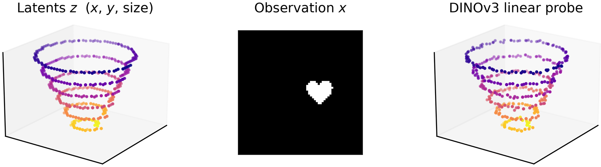
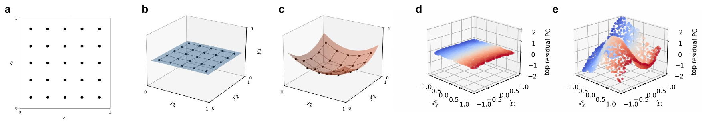
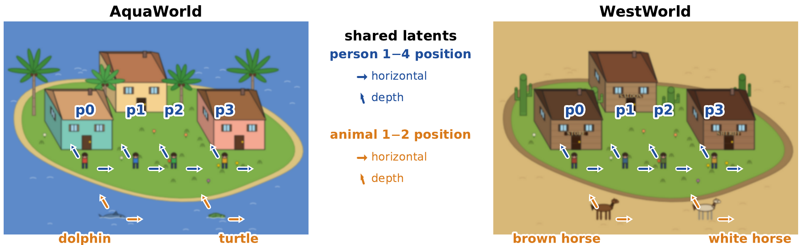
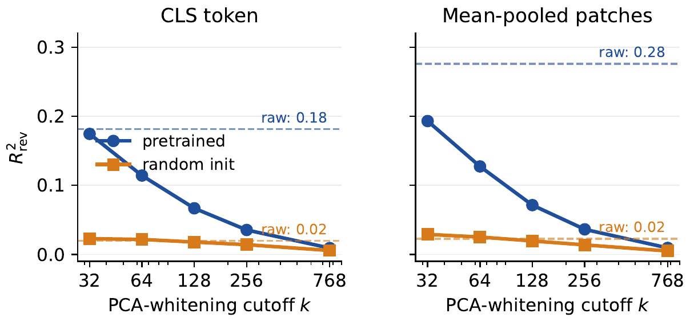
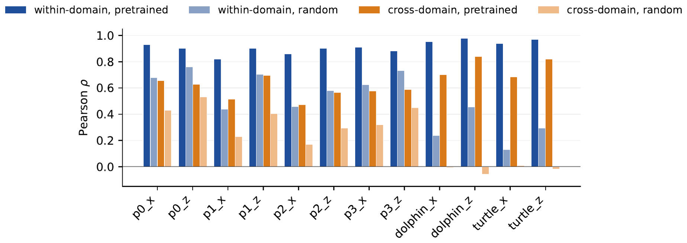

Linear World Model. A 3D latent trajectory $z$ (left) generates images $x$ (middle) through a renderer. A linear probe $\hat z = W f(x)$ on DINOv3-B/16 features recovers the trajectory in latent space (right), inverting the rendering pipeline with a linear map. We ask when recovery is evidence of a linear world model rather than a generic property of any sufficiently rich feature map.
The ‘linear world model’ hypothesis holds that pretrained vision models encode generative factors as linearly decodable directions in feature space, and underwrites a standard methodology: train a linear probe, declare a factor ‘represented’ if accuracy is high. We show this test is too permissive. Asymptotically, any sufficiently rich feature map, including a random one, admits a linear readout, so high probe accuracy is consistent with two very different geometries: a true linear world model, where the latent-aligned subspace dominates the representation, or a kernel machine, where the latents lie linearly inside a much larger curved manifold. The distinction is not academic. The curved structure orthogonal to the probe is precisely where out-of-distribution generalization, robustness, and compositional transfer live. We propose three asymmetric diagnostics that distinguish the two cases: reverse predictivity, spectral concentration, and out-of-distribution generalization. We validate them in a fully observed simulation where ground truth is known. Applied to pretrained vision encoders on SVG-World, our deterministic generative benchmark with paired visual styles, they show pretraining produces structure beyond a random kernel but well short of a true linear world model. Thus, forward decoding is not enough to certify the claims that have been built on it.
TL;DR: A high linear-probe score does not show that a model has a linear world model: with enough features, even a random network is linearly decodable. Reverse predictivity, spectral concentration, and out-of-distribution transfer tell the two apart, and they place DINOv3 between a random kernel and a true linear world model.

Linear world model vs. kernel machine. (a) A 2D latent grid. (b, c) A linear world model lifts the grid to a flat plane (Def. 1); a kernel machine might lift it to a curved surface. Forward $R^2$ is high in both; reverse $R^2$ separates them (Prop. 2). (d, e) Empirical realization in the simulation at $h = 1024$: forward-decoded $\hat z_1, \hat z_2$ against the top variance direction in the decoder's null space. Trained is a plane, random a curved manifold.
The standard inference. Train a linear probe from frozen features $f(x) \in \R^d$ to the generative latents $z \in \R^k$, and declare $z$ “represented” when $R^2$ is high. The implicit claim: if $z$ is linearly decodable from $f(x)$, then $f$ has learned $z$ as an axis of its representation.
Why it is too permissive. Rich nonlinear feature maps, random ones included, are universal approximators in the kernel sense, so almost any smooth target can be linearly read out of them. A high forward $R^2$ is therefore consistent with two hypotheses: (H1) the model organized its representation around the latents, or (H2) the model is a high-dimensional feature map in which $z$ happens to lie linearly, regardless of training.
Each test exploits a different asymmetry between Definition 1 and the mere existence of a linear decoder. Under Definition 1, (D1) is near-tight, (D2) is near 1 for $k \le k_{\text{lat}}$, and (D3) gives near-in-distribution test scores. Under a rich kernel-machine map, forward $R^2$ can be high while all three fail.
A fully observed simulation. Latents $z \sim \mathrm{Unif}([-1, 1]^2)$ are mapped to features $f(z) \in \R^h$ by a two-layer ReLU MLP, at matched hidden width $h$ in two regimes: random init (fresh weights, no training) and trained (end-to-end with a linear readout, AdamW, weight decay $\lambda \in \{0, 1\}$). Forward $R^2$ for the random network rises with width until it matches the trained model, exactly as Proposition 1 predicts. Reverse $R^2$ keeps them apart at every width: close to 1 for the trained network with weight decay, about 0.2 for random init. In feature space the difference is visible directly (panels d, e of the figure above): trained is a flat plane, random a curved manifold.
SVG-World. To test pretrained vision encoders on the same terms, we need a data source with a small set of continuous latents, deterministic rendering, enough visual richness for nontrivial features, multiple objects, and a paired second visual style with the same latent layout. Each scene is rendered from a 32-dim latent $z \in [0, 1]^{32}$ with 20 active dimensions: four people with a position $(x, z)$, a facing direction and a skin hue, and two animals with a position. The layout is identical in AquaWorld and WestWorld; only the rendering differs ($N = 10{,}000$ scenes each, rasterized at $224 \times 224$).

Both panels show the canonical scene at $z = 0$; arrows mark the two position latents per object ($+x$ horizontal, $+z$ depth). AquaWorld (left) and WestWorld (right) share the latent layout but differ in rendering, enabling the cross-domain transfer test (D3).
DINOv3 forward decoding. We extract frozen DINOv3-B/16 features (CLS token and mean-pooled patch tokens, $d = 768$) on both worlds and fit ridge probes on a 50/50 split. As a baseline we use random-init DINOv3: the same architecture with freshly initialized weights. Pretrained DINOv3 recovers all 12 position latents with mean $\rho \approx 0.94$ (CLS), the kind of evidence routinely cited for the linear world model hypothesis. Random init partially decodes people but loses the animals almost completely, so the gap between pretrained and random init is largest on the animal positions.
| CLS token | Mean-pooled patches | |||||||
|---|---|---|---|---|---|---|---|---|
| Pearson $\rho$ | $R^2$ | Pearson $\rho$ | $R^2$ | |||||
| latent | pre | rand | pre | rand | pre | rand | pre | rand |
| p0_x | 0.97 | 0.71 | 0.94 | 0.47 | 0.93 | 0.68 | 0.85 | 0.41 |
| p0_z | 0.95 | 0.80 | 0.89 | 0.61 | 0.90 | 0.76 | 0.80 | 0.55 |
| p1_x | 0.91 | 0.49 | 0.82 | 0.21 | 0.82 | 0.44 | 0.65 | 0.16 |
| p1_z | 0.95 | 0.72 | 0.89 | 0.50 | 0.90 | 0.70 | 0.80 | 0.45 |
| p2_x | 0.93 | 0.50 | 0.86 | 0.20 | 0.86 | 0.46 | 0.71 | 0.16 |
| p2_z | 0.95 | 0.60 | 0.90 | 0.32 | 0.90 | 0.58 | 0.79 | 0.25 |
| p3_x | 0.95 | 0.68 | 0.91 | 0.42 | 0.91 | 0.63 | 0.81 | 0.30 |
| p3_z | 0.93 | 0.74 | 0.87 | 0.52 | 0.88 | 0.73 | 0.76 | 0.42 |
| dolphin_x | 0.93 | 0.42 | 0.86 | 0.25 | 0.95 | 0.24 | 0.89 | 0.07 |
| dolphin_z | 0.97 | 0.50 | 0.94 | 0.31 | 0.98 | 0.45 | 0.96 | 0.25 |
| turtle_x | 0.88 | 0.18 | 0.76 | 0.03 | 0.94 | 0.13 | 0.86 | 0.02 |
| turtle_z | 0.95 | 0.32 | 0.90 | 0.09 | 0.97 | 0.29 | 0.94 | 0.06 |
| person mean | 0.94 | 0.65 | 0.89 | 0.41 | 0.89 | 0.62 | 0.77 | 0.34 |
| animal mean | 0.93 | 0.35 | 0.87 | 0.17 | 0.96 | 0.28 | 0.91 | 0.10 |
| all mean | 0.94 | 0.55 | 0.88 | 0.33 | 0.91 | 0.51 | 0.82 | 0.26 |
DINOv3-B/16 forward decoding on SVG-World, per position latent, averaged over AquaWorld and WestWorld. Pre: pretrained. Rand: same architecture, freshly initialized. Forward decoding separates pretrained from random init at $d = 768$, but per the simulation this gap alone does not establish Definition 1.
Reverse predictivity and spectral concentration. On raw CLS features, pretrained DINOv3 reaches $R^2_{\rev} = 0.18$ vs. $0.02$ for random init; on mean-pooled patches, $0.28$ vs. $0.02$. The pretrained-vs-random gap is roughly $10\times$, far larger in relative terms than the $\sim 1.7\times$ forward gap: the forward gap understates how much more latent-aligned variance pretraining has. Sweeping the PCA-whitening cutoff $k$ shows where that variance lives: pretrained's $R^2_{\rev}(k)$ is largest at $k \approx 32$, close to the active latent dimension, and decays as $k$ grows, while random init stays flat near $0.02$.

Reverse predictivity (D1) and spectral concentration (D2). $R^2_{\rev}$ vs. PCA-whitening cutoff $k$; solid lines whiten the top-$k$ PCs to unit variance, dashed lines are raw features. Pretrained's latent-aligned variance concentrates in the top $\sim$32 to 64 PCs; random's is diffuse. By $k = 768$ both collapse.
Out-of-distribution generalization across visual styles. For (D3) we train a ridge probe on one world's features and evaluate it on the other's, with features mean-centered per world so that what is tested is the transfer of directions, not feature means. Pretrained averages $\rho = 0.91$ within domain vs. $0.51$ for random ($\Delta\rho = 0.41$). Cross-domain both fall (pretrained $0.65$, random $0.23$), but the gap is unchanged: $\Delta\rho = 0.42$. The encoder's positional directions transfer across the AquaWorld↔WestWorld stylistic gap.

Cross-domain transfer (D3). Per-latent test $\rho$ on DINOv3-B/16 mean-pooled patches, within domain and cross domain (averaged over AquaWorld→WestWorld and the reverse). The pretrained-vs-random gap holds within domain ($\Delta\rho = 0.41$) and across domains ($\Delta\rho = 0.42$).
Takeaway. Forward $\rho \approx 0.94$ separates pretrained from random DINOv3 and rules out the strongest “kernel machine in disguise” reading, but it does not establish Definition 1. The asymmetric diagnostics place DINOv3 partway between the trained simulation (all diagnostics at 1) and a kernel-machine null: reverse $R^2$ is small in absolute terms but $\approx 10\times$ the random baseline, the latent-aligned variance concentrates in the top $\sim$32 to 64 PCs, and the positional directions are style-invariant. Whether a representation behaves as a linear world model depends on the training pressures acting on it.
@article{kutluozen2026linear,
author = {Kutluozen, Nadir and Intern{\`o}, Christian and Klindt, David},
title = {Is a Linear Probe Evidence of a Linear Representation?},
year = {2026},
journal = {arXiv preprint arXiv:XXXX.XXXXX},
}